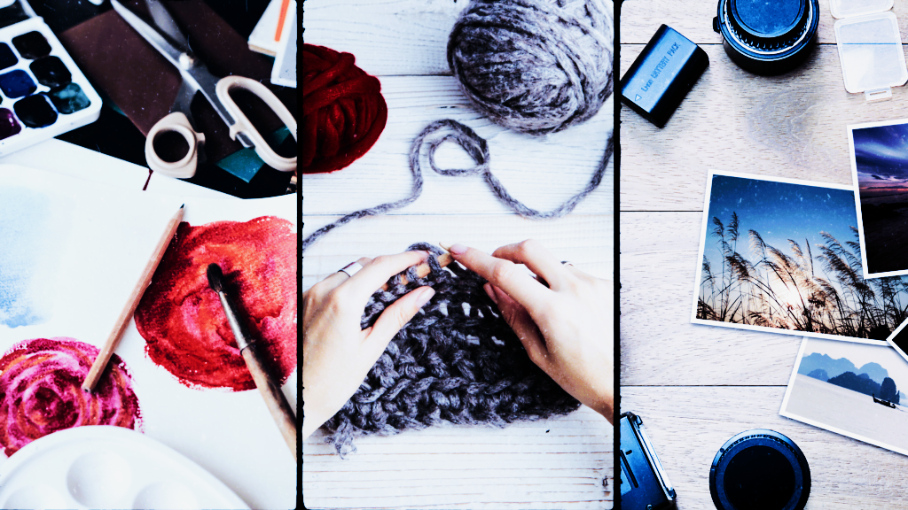
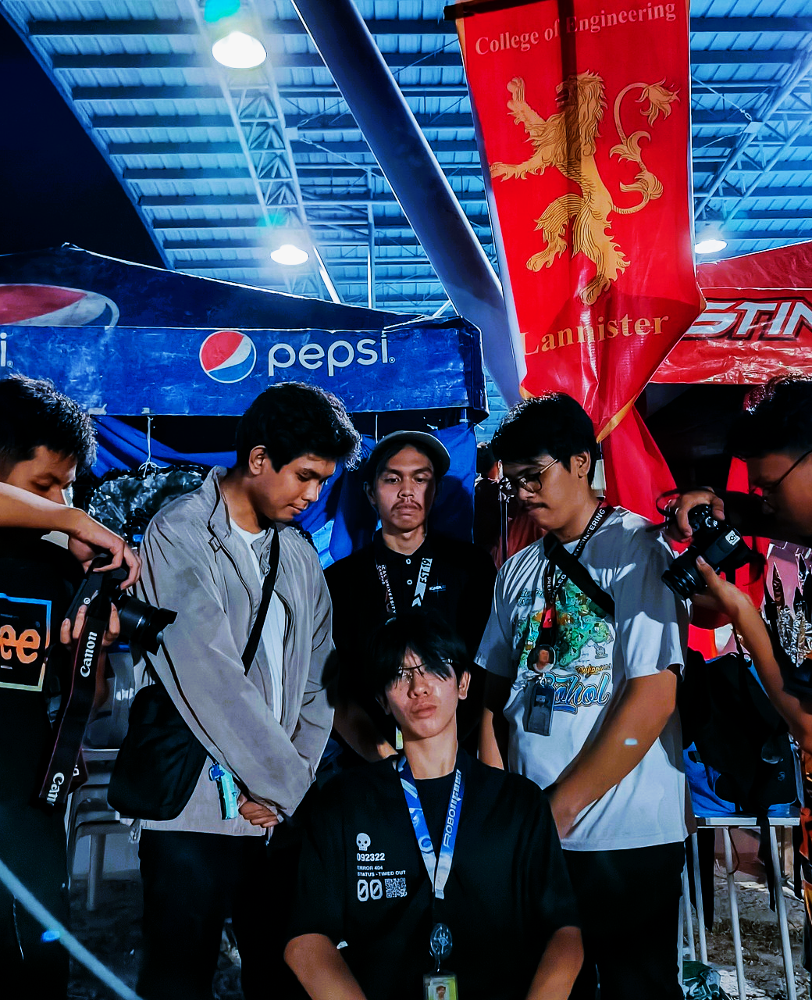
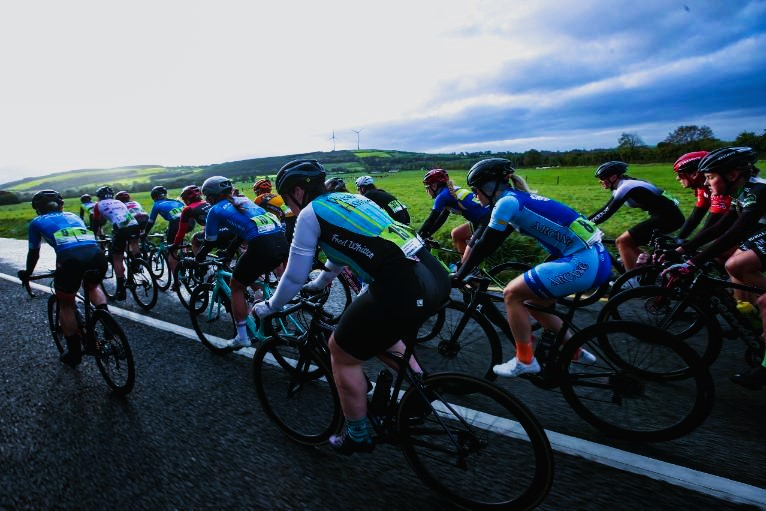

Engaging in hobbies is a great way to enhance creativity and find joy in everyday life.
Hobbies come in many forms, offering something for everyone. Whether you're a fan of artistic pursuits, sports, or collecting, there's always a way to explore your passions.
Creative hobbies like painting, sculpting, or photography allow individuals to express themselves and capture beauty in their own unique ways.
Physical hobbies like hiking, cycling, or playing team sports provide not only enjoyment but also improve physical health and mental well-being.
Board games and puzzles offer a way to engage in strategic thinking and have fun with friends and family.
Gardening is a relaxing activity that connects individuals with nature and offers the reward of growing your own plants or vegetables. Collecting stamps, coins, or memorabilia helps preserve history and personal stories.
Reading and writing serve as intellectual hobbies, sparking curiosity and imagination. They are also excellent ways to unwind.
Whether you prefer solo activities like yoga or group activities like dance classes, hobbies play an important role in achieving a balanced lifestyle.
Hobbies also bring a sense of achievement and help improve skills, whether it’s crafting, coding, or cooking. There's no limit to what you can explore.
Creative hobbies like painting, sculpting, or photography allow individuals to express themselves and capture beauty in their own unique ways.

Capturing moments through photography is a fulfilling creative outlet.
Physical hobbies like hiking, cycling, or playing team sports provide not only enjoyment but also improve physical health and mental well-being.
Board games and puzzles offer a way to engage in strategic thinking and have fun with friends and family.

Cycling combines fitness with exploration, making it a popular outdoor hobby.
Gardening is a relaxing activity that connects individuals with nature and offers the reward of growing your own plants or vegetables. Collecting stamps, coins, or memorabilia helps preserve history and personal stories.
Reading and writing serve as intellectual hobbies, sparking curiosity and imagination. They are also excellent ways to unwind.
Whether you prefer solo activities like yoga or group activities like dance classes, hobbies play an important role in achieving a balanced lifestyle.
Hobbies also bring a sense of achievement and help improve skills, whether it’s crafting, coding, or cooking. There's no limit to what you can explore.